ajuste <- TS[["total"]]
plot(ajuste, "state", burn = 2000)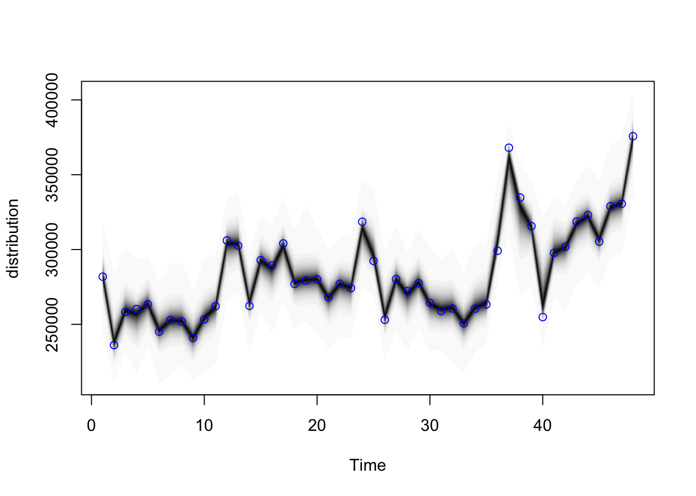
Con el fin de ejemplificar la teoría y metodologías mencionadas en secciones anteriores, se procederá a resolver un problema de pronósticos de series de tiempo para las ventas de 4 productos en dos tipos de tiendas y a lo largo de diferentes países alrededor de Europa. El conjunto de datos empleado se encuentra en Kaggle.
Se abordará el problema como un serie jerárquica igual a la Figura 1 de la Sección 2.
El principal problema a resolver es que las prediciones en cada nivel jerárquico cuadren para una mejor toma de decisiones, por ejemplo, que la suma de los pronósticos de todas las tiendas en todos los países sea igual a la suma de los pronósticos de todos los países.
Primero, supongamos que queremos pronosticar las ventas totales en toda la zona de Europa utilizando información de 2017 a 2020 a nivel mensual, y queremos realizar predicciones dos años hacia adelante, es decir, 24 periodos adicionales. Para ello, utilizaremos un modelo de espacio de estados con nivel local con tendencia y estacionalidad con 12 periodos (meses).
A continuación se muestra el ajuste con el modelo a través de bsts.
ajuste <- TS[["total"]]
plot(ajuste, "state", burn = 2000)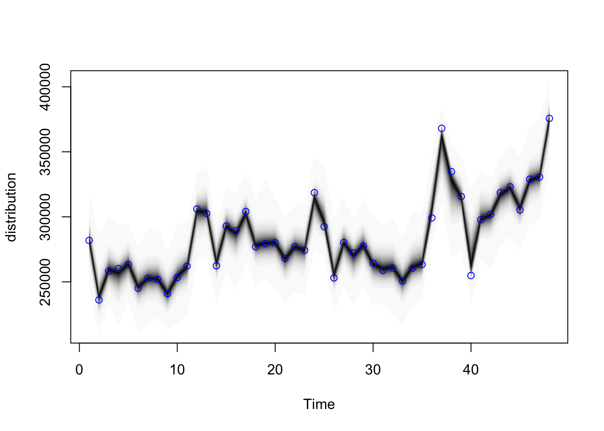
En la siguiente figura podemos ver la desagregación de la serie temporal en tendencia y estacionalidad. Podemos ver que la tendencia tiene un comportamiento como el descrito en la Sección 2 (Análisis de la tendencia) ya que con la pandemia se tuvo una caída abrupta en las ventas para todos los países durante el primer trimestre de 2020 y una tendencia de recuperación en el nivel de ventas posterior a ese trimestre. Para la estacionalidad también podemos ver un comportamiento similar y bien marcado como el de la Sección 2 (Análisis de estacionalidad).
dims <- ajuste$state.contributions |> dim()
tiempo <- dims[3]
contribuciones_tbl <- map(1:tiempo, ~ ajuste$state.contributions[,,.x] |>
as_tibble() |> mutate(t = .x)) |> bind_rows() |>
pivot_longer(trend:seasonal.12.1, values_to = "value", names_to = "comp") |>
group_by(t, comp) |>
summarise(media = mean(value), q5 = quantile(value, 0.05),
q95 = quantile(value, 0.95), .groups = "drop")
ggplot(contribuciones_tbl,
aes(x = t, y = media, ymin = q5, ymax = q95)) +
geom_ribbon(alpha = 0.1) +
geom_line(alpha = 1) + facet_wrap(~ comp, scales = "free_y", ncol = 1)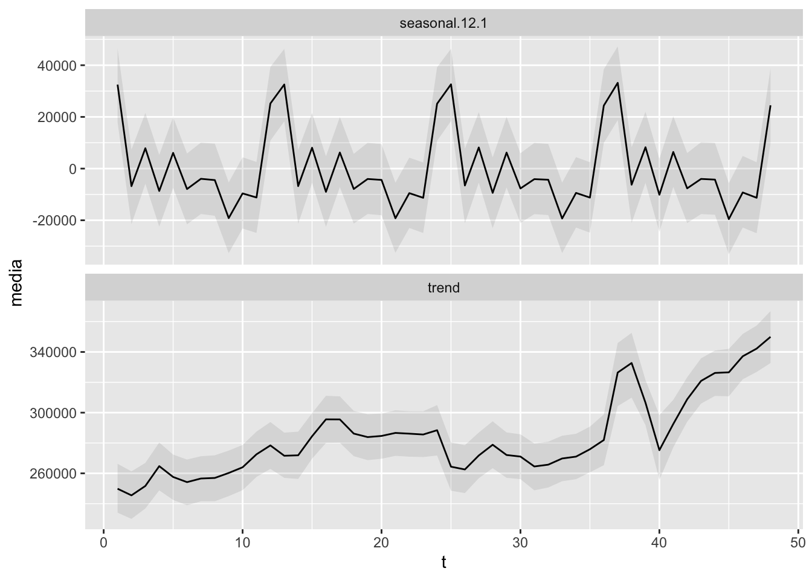
Podemos notar que no existe correlación al menos a un paso. Sin embargo, gracias al gráfico “Q-Q” podemos notar que existen errores grandes en algunos meses que no pudieron ser captados por la propuesta de modelo.
pred_errors_tbl <-
ajuste$one.step.prediction.errors |>
t() |> as_tibble() |>
mutate(t = 1: tiempo) |>
pivot_longer(-c(t), names_to = "sim", values_to = "valor") |>
group_by(t) |>
summarise(valor = mean(valor)) |>
as_tsibble(index = t)
ACF(pred_errors_tbl) |>
autoplot() + ylim(c(-1,1))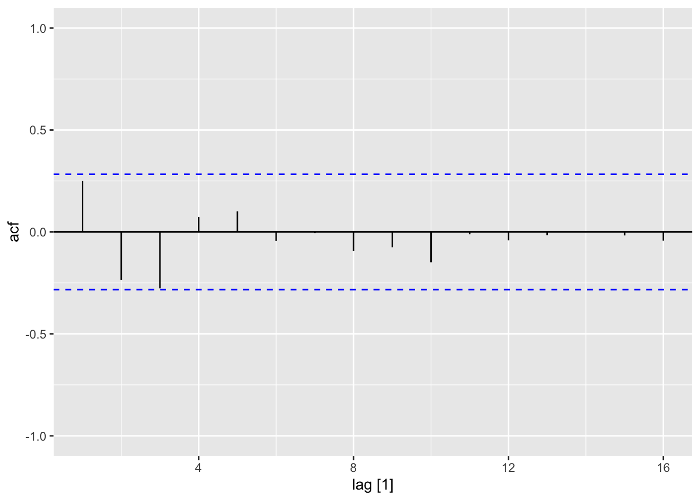
error <- ajuste$one.step.prediction.errors |> apply(2, mean)
qqnorm(error)
qqline(error)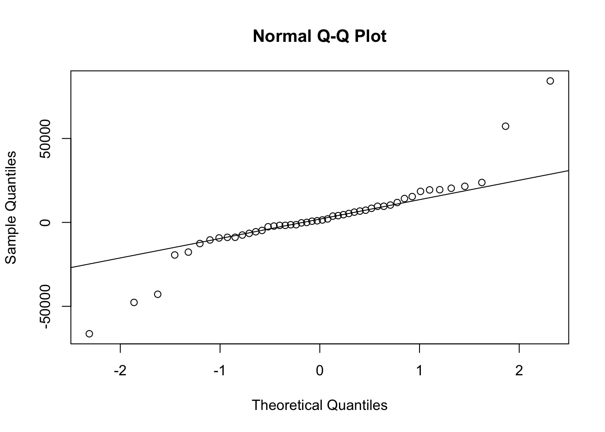
Finalmente, mostramos los pronósticos hechos a 24 meses hacia adelante, donde podemos ver que a mayor tiempo, el intervalo de confianza del pronóstico se amplía debido al aumento de la varianza.
pred <- predict(ajuste, horizon = 24,burn=2000)
plot(pred)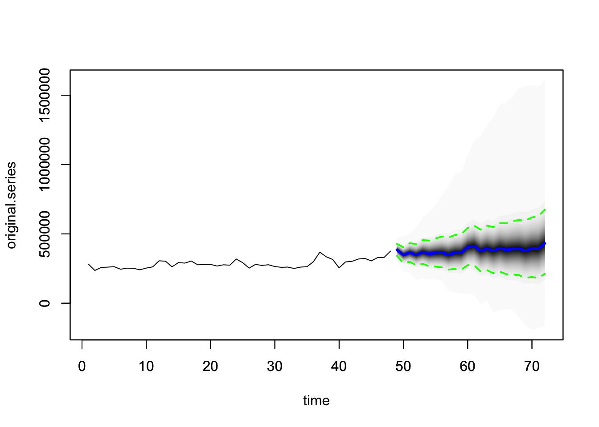
Una vez con los pronósticos de la serie total de toda Europa, el negocio necesita saber el pronóstico para cada país, para cada tipo de tienda dentro de cada país, y para cada producto de cada tienda de cada país, con el fin de tomar acciones en casos de que alguna unidad de negocio tenga problemas con sus niveles de ventas. Para ello, se realizan ajustes con el mismo modelo de espacio de estados con nivel local con tendencia y estacionalidad con 12 periodos, aunque para todos los niveles de cada unidad de negocio.
Aquí es donde se presenta el principal problema de este tipo de series de tiempo, ya que la suma de todas las series por producto, tienda o país debería ser la misma que la serie total en toda Europa, lo cual no siempre pasa y llega a provocar dudas sobre cuál serie es la correcta y debería seguirse.
Lo anterior se ilustra en el siguiente gráfico que compara la serie total contra la suman de todas las series a nivel producto, tienda y país. La discrepancia se nota más cuando se realizan pronósticos en ventanas de tiempo no observadas (parte derecha a partir de la línea vertical punteada).
Las 3 series presentadas sólo intentan ilustrar el problema de discrepancia, sin embargo, existen otras combinaciones en la jerarquía que tienen el mismo problema, por ejemplo, sumar todas las series de un producto de un país determinado contra la serie de ese mismo país.
ajuste <- TS[["total"]]
dims <- ajuste$state.contributions |> dim()
tiempo <- dims[3]
contribuciones_total <- map(1:tiempo, ~ ajuste$state.contributions[,,.x] |>
as_tibble() |> mutate(t = .x)) |> bind_rows() |>
pivot_longer(trend:seasonal.12.1, values_to = "value", names_to = "comp") |>
group_by(t, comp) |>
summarise(media = mean(value), q5 = quantile(value, 0.05),
q95 = quantile(value, 0.95), .groups = "drop") |>
group_by(t) |>
summarise(media_total = sum(media))
pred <- predict(ajuste, horizon = 24,burn=2000)$mean
contribuciones_total<-rbind(contribuciones_total,tibble(t = 49:72, media_total = pred))
i<-0
for(c in unique(sales_m$country)){
for(s in unique(sales$store)){
for(p in unique(sales$product)){
ajuste <- TS[[paste(c,s,p,sep = "_")]]
dims <- ajuste$state.contributions |> dim()
tiempo <- dims[3]
contribuciones_tbl <- map(1:tiempo, ~ ajuste$state.contributions[,,.x] |>
as_tibble() |> mutate(t = .x)) |> bind_rows() |>
pivot_longer(trend:seasonal.12.1, values_to = "value", names_to = "comp") |>
group_by(t, comp) |>
summarise(media = mean(value), q5 = quantile(value, 0.05),
q95 = quantile(value, 0.95), .groups = "drop") |>
group_by(t) |>
summarise(media_producto = sum(media)) |>
mutate(p = paste(c,s,p,sep = "_"))
pred <- predict(ajuste, horizon = 24,burn=2000)$mean
contribuciones_tbl<-rbind(contribuciones_tbl,tibble(t = 49:72, media_producto = pred,p = paste(c,s,p,sep = "_")))
if(i==0){contribuciones_producto<-contribuciones_tbl}else{contribuciones_producto<-rbind(contribuciones_producto,contribuciones_tbl)}
i<-i+1
}
}
}
contribuciones_producto_tbl<-contribuciones_producto
contribuciones_producto<-contribuciones_producto |>
group_by(t) |>
summarise(media_producto = sum(media_producto))
i<-0
for(c in unique(sales_m$country)){
for(s in unique(sales$store)){
ajuste <- TS[[paste(c,s,sep = "_")]]
dims <- ajuste$state.contributions |> dim()
tiempo <- dims[3]
contribuciones_tbl <- map(1:tiempo, ~ ajuste$state.contributions[,,.x] |>
as_tibble() |> mutate(t = .x)) |> bind_rows() |>
pivot_longer(trend:seasonal.12.1, values_to = "value", names_to = "comp") |>
group_by(t, comp) |>
summarise(media = mean(value), q5 = quantile(value, 0.05),
q95 = quantile(value, 0.95), .groups = "drop") |>
group_by(t) |>
summarise(media_store = sum(media)) |>
mutate(p = paste(c,s,sep = "_"))
pred <- predict(ajuste, horizon = 24,burn=2000)$mean
contribuciones_tbl<-rbind(contribuciones_tbl,tibble(t = 49:72, media_store = pred,p = paste(c,s,sep = "_")))
if(i==0){contribuciones_store<-contribuciones_tbl}else{contribuciones_store<-rbind(contribuciones_store,contribuciones_tbl)}
i<-i+1
}
}
contribuciones_store_tbl<-contribuciones_store
contribuciones_store<-contribuciones_store |>
group_by(t) |>
summarise(media_store = sum(media_store))
i<-0
for(c in unique(sales_m$country)){
ajuste <- TS[[paste(c,sep = "_")]]
dims <- ajuste$state.contributions |> dim()
tiempo <- dims[3]
contribuciones_tbl <- map(1:tiempo, ~ ajuste$state.contributions[,,.x] |>
as_tibble() |> mutate(t = .x)) |> bind_rows() |>
pivot_longer(trend:seasonal.12.1, values_to = "value", names_to = "comp") |>
group_by(t, comp) |>
summarise(media = mean(value), q5 = quantile(value, 0.05),
q95 = quantile(value, 0.95), .groups = "drop") |>
group_by(t) |>
summarise(media_country = sum(media)) |>
mutate(p = paste(c,sep = "_"))
pred <- predict(ajuste, horizon = 24,burn=2000)$mean
contribuciones_tbl<-rbind(contribuciones_tbl,tibble(t = 49:72, media_country = pred,p = paste(c,sep = "_")))
if(i==0){contribuciones_country<-contribuciones_tbl}else{contribuciones_country<-rbind(contribuciones_country,contribuciones_tbl)}
i<-i+1
}
contribuciones_country_tbl <- contribuciones_country
contribuciones_country<-contribuciones_country |>
group_by(t) |>
summarise(media_country = sum(media_country))
contribuciones_tbl<-cbind(
contribuciones_total,
contribuciones_producto|>select(media_producto),
contribuciones_store |>select(media_store),
contribuciones_country |>select(media_country)
) |>
mutate(
diff_total_producto = media_total - media_producto,
diff_total_store = media_total - media_store,
diff_total_country = media_total - media_country
)
contribuciones_tbl_2<-contribuciones_producto_tbl |>
separate(p, c("country","store","product"),sep="_") |>
group_by(t,country) |>
summarise(media_producto = sum(media_producto)) |>
ungroup()
contribuciones_tbl_2 <- merge(contribuciones_tbl_2,contribuciones_country_tbl, by.x = c("t","country"),by.y =c("t", "p"),all=TRUE)
contribuciones_tbl_3<-contribuciones_store_tbl |>
separate(p, c("country","store"),sep="_") |>
group_by(t,country) |>
summarise(media_store = sum(media_store)) |>
ungroup()
contribuciones_tbl_3 <- merge(contribuciones_tbl_3,contribuciones_country_tbl, by.x = c("t","country"),by.y =c("t", "p"),all=TRUE)
i<-0
for(c in unique(sales_m$country)){
for(s in unique(sales$store)){
for(p in unique(sales$product)){
ajuste <- TSp[[paste(c,s,p,sep = "_")]]
dims <- ajuste$state.contributions |> dim()
tiempo <- dims[3]
contribuciones_p <- map(1:tiempo, ~ ajuste$state.contributions[,,.x] |>
as_tibble() |> mutate(t = .x)) |> bind_rows() |>
pivot_longer(trend:seasonal.12.1, values_to = "value", names_to = "comp") |>
group_by(t, comp) |>
summarise(media = mean(value), q5 = quantile(value, 0.05),
q95 = quantile(value, 0.95), .groups = "drop") |>
group_by(t) |>
summarise(media_producto = sum(media)) |>
mutate(p = paste(c,s,p,sep = "_"))
pred <- predict(ajuste, horizon = 24,burn=2000)$mean
contribuciones_p<-rbind(contribuciones_p,tibble(t = 49:72, media_producto = pred,p = paste(c,s,p,sep = "_")))
if(i==0){contribuciones_p_producto<-contribuciones_p}else{contribuciones_p_producto<-rbind(contribuciones_p_producto,contribuciones_p)}
i<-i+1
}
}
}
pp1<-contribuciones_producto_tbl |>
separate(p, c("country","store","product"),sep="_") |>
filter(country == "Poland") |>
filter(store == "KaggleMart")
pp2<-contribuciones_store_tbl |>
separate(p, c("country","store"),sep="_") |>
filter(country == "Poland") |>
filter(store == "KaggleMart")
pp3<-contribuciones_p_producto |>
separate(p, c("country","store","product"),sep="_") |>
filter(country == "Poland") |>
filter(store == "KaggleMart") |>
group_by(t,country,store) |>
mutate(p_all = sum(media_producto)) |>
mutate(media_producto = media_producto/p_all)
pp4<-merge(pp2,pp3, by = c("t","country","store"),all=TRUE) |>
tibble() |>
mutate(media_producto=round(media_producto*media_store,0))
pp4<-merge(pp4,pp1, by = c("t","country","store","product"),all=TRUE,suffixes = c("_proportion","_serie")) |>
tibble()
ppp1<-contribuciones_producto_tbl |>
separate(p, c("country","store","product"),sep="_") |>
filter(country == "Germany") |>
filter(store == "KaggleRama")
ppp2<-contribuciones_store_tbl |>
separate(p, c("country","store"),sep="_") |>
filter(country == "Germany") |>
filter(store == "KaggleRama")
ppp3<-contribuciones_p_producto |>
separate(p, c("country","store","product"),sep="_") |>
filter(country == "Germany") |>
filter(store == "KaggleRama") |>
group_by(t,country,store) |>
mutate(p_all = sum(media_producto)) |>
mutate(media_producto = media_producto/p_all)
ppp4<-merge(ppp2,ppp3, by = c("t","country","store"),all=TRUE) |>
tibble() |>
mutate(media_producto=round(media_producto*media_store,0))
ppp4<-merge(ppp4,ppp1, by = c("t","country","store","product"),all=TRUE,suffixes = c("_proportion","_serie")) |>
tibble() ggplot(contribuciones_tbl)+
geom_line(aes(x = t, y = diff_total_producto/1000,colour = "Total - Producto")) +
geom_line(aes(x = t, y = diff_total_store/1000,colour = "Total - Store")) +
geom_line(aes(x = t, y = diff_total_country/1000,colour = "Total - Country")) +
labs(x = "t", y = "sales (miles)") +
scale_color_manual(name = "Diferencias", values = c(
"Total - Producto" = "darkblue","Total - Store" = "#218611","Total - Country" ="#77091b")) +
geom_hline(yintercept = 0, linetype="dotted", color = "black", size=1.5) +
geom_vline(xintercept = 48, linetype="dotted", color = "black", size=1.5)Warning: Using `size` aesthetic for lines was deprecated in ggplot2 3.4.0.
ℹ Please use `linewidth` instead.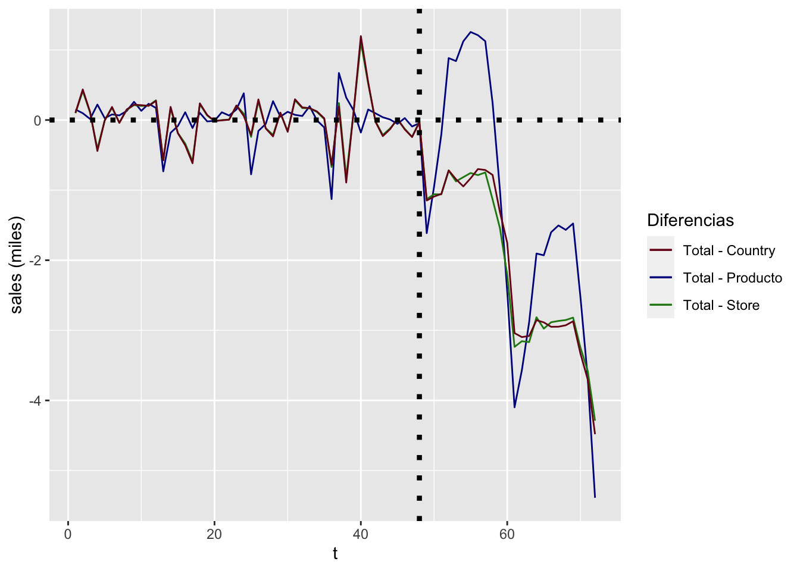
Utilizando este enfoque se ajustan todas las series de tiempo del nivel más bajo, en este caso de los productos de todas las tiendas de todos los países, lo que implica que para este enfoque se tienen que ajustar 48 series de tiempo y posteriormente sumarlas para obtener los pronósticos de cualquiera de los niveles hacia arriba.
ggplot(contribuciones_tbl)+
geom_line(aes(x = t, y = media_total/1000,colour = "Total") ) +
geom_line(aes(x = t, y = media_producto/1000, colour = "Producto"),linetype = "dashed",size = 1) +
labs(x = "t", y = "sales (miles)") +
scale_color_manual(name = "Serie Jerárquica", values = c("Total" = "red", "Producto" = "darkblue")) +
geom_vline(xintercept = 48, linetype="dotted", color = "black", size=1.5)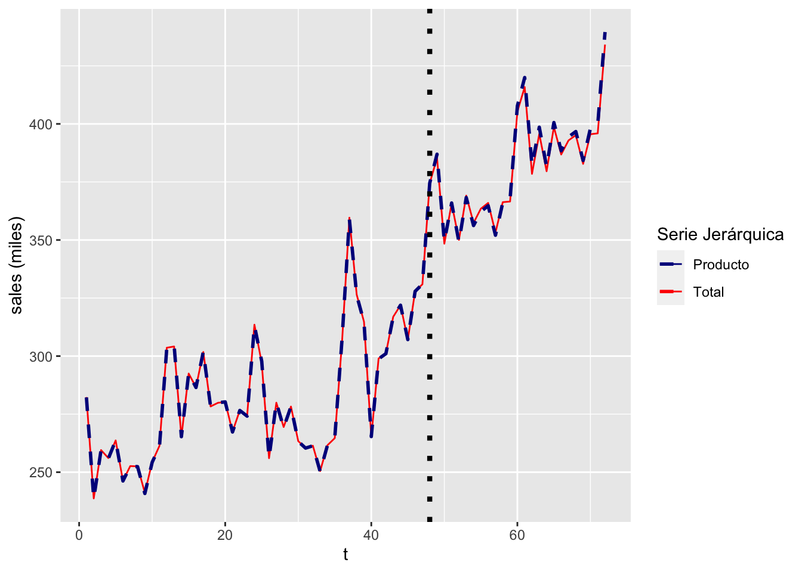
ggplot(contribuciones_tbl_2)+
geom_line(aes(x = t, y = media_country/1000,colour = "Country") ) +
geom_line(aes(x = t, y = media_producto/1000, colour = "Producto"),linetype = "dashed",size = 1) +
labs(x = "t", y = "sales (miles)") +
scale_color_manual(name = "Serie Jerárquica", values = c("Country" = "red", "Producto" = "darkblue")) +
geom_vline(xintercept = 48, linetype="dotted", color = "black", size=1.5) +
facet_wrap(vars(country), nrow = 3, scales = "free_y")El problema con el enfoque anterior es que el nivel más bajo de la serie jerárquica podría ser altamente ruidoso y no todos los nodos podrían tener la suficiente información disponible para hacer un ajuste o predicción, además de que al ser el nivel más bajo el número de series a ajustar podría ser muy amplio. Por lo tanto, utilizaremos un enfoque que combina bottom-up y top-down usando un nivel de la serie de tiempo lo suficientemente robusto como para obtener pronósticos adeacuados además de ajustar una menor cantidad de series de tiempo.
Utilizaremos el nivel de store para ajustar sólo 12 series de tiempo. Para los niveles hacia arriba usaremos el enfoque bottom-up, es decir, para país y total; mientras que para los niveles hacia abajo usaremos el enfoque top-down con forecast de proporciones, es decir, para producto.
ggplot(contribuciones_tbl)+
geom_line(aes(x = t, y = media_total/1000,colour = "Total") ) +
geom_line(aes(x = t, y = media_store/1000, colour = "Store"),linetype = "dashed",size = 1) +
labs(x = "t", y = "sales (miles)") +
scale_color_manual(name = "Serie Jerárquica", values = c("Total" = "red", "Store" = "darkblue")) +
geom_vline(xintercept = 48, linetype="dotted", color = "black", size=1.5)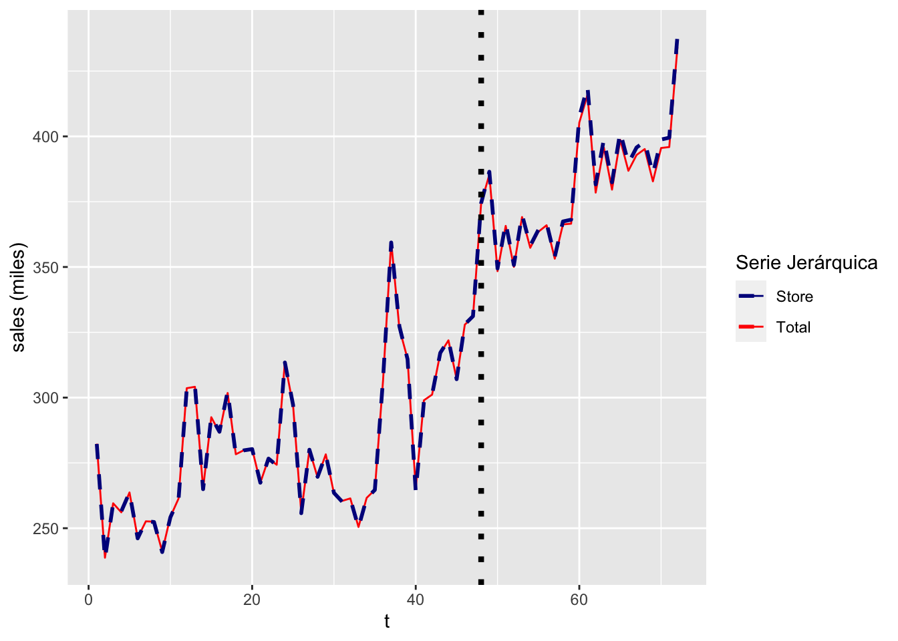
ggplot(contribuciones_tbl_3)+
geom_line(aes(x = t, y = media_country/1000,colour = "Country") ) +
geom_line(aes(x = t, y = media_store/1000, colour = "Store"),linetype = "dashed",size = 1) +
labs(x = "t", y = "sales (miles)") +
scale_color_manual(name = "Serie Jerárquica", values = c("Country" = "red", "Store" = "darkblue")) +
geom_vline(xintercept = 48, linetype="dotted", color = "black", size=1.5) +
facet_wrap(vars(country), nrow = 3, scales = "free_y")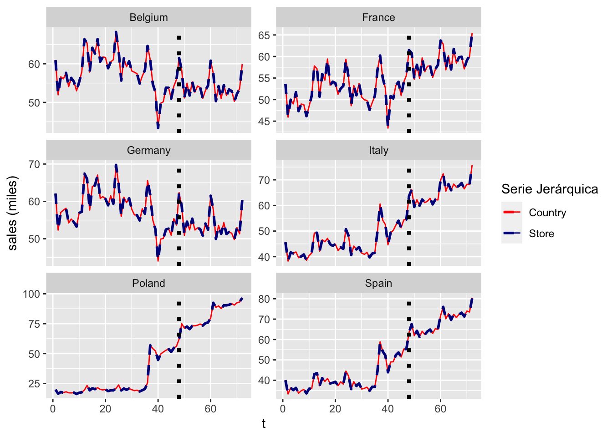
Para los pronósticos de las proporciones de cada producto por tienda por país, se normalizó con el fin de que sumen 1, además de que se redondeó el pronóstico, ya que las ventas son valores enteros.
ggplot(pp4)+
geom_line(aes(x = t, y = media_producto_serie/1000,colour = "Producto") ) +
geom_line(aes(x = t, y = media_producto_proportion/1000, colour = "Store"),linetype = "dashed",size = 1) +
labs(x = "t", y = "sales (miles)", title = "Poland & KaggleMart") +
scale_color_manual(name = "Serie Jerárquica", values = c("Producto" = "red", "Store" = "darkblue")) +
geom_vline(xintercept = 48, linetype="dotted", color = "black", size=1.5) +
facet_wrap(vars(product), nrow = 2, scales = "free_y")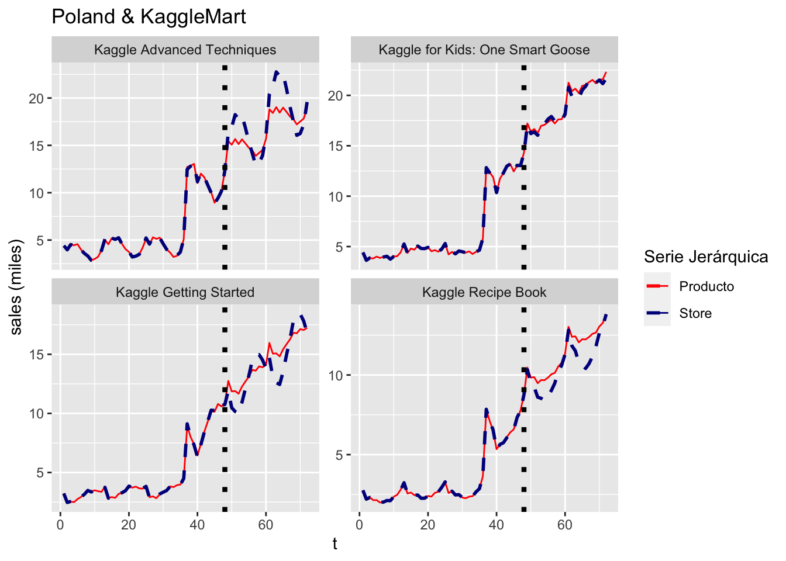
ggplot(ppp4)+
geom_line(aes(x = t, y = media_producto_serie/1000,colour = "Producto") ) +
geom_line(aes(x = t, y = media_producto_proportion/1000, colour = "Store"),linetype = "dashed",size = 1) +
labs(x = "t", y = "sales (miles)", title = "Germany & KaggleRama") +
scale_color_manual(name = "Serie Jerárquica", values = c("Producto" = "red", "Store" = "darkblue")) +
geom_vline(xintercept = 48, linetype="dotted", color = "black", size=1.5) +
facet_wrap(vars(product), nrow = 2, scales = "free_y")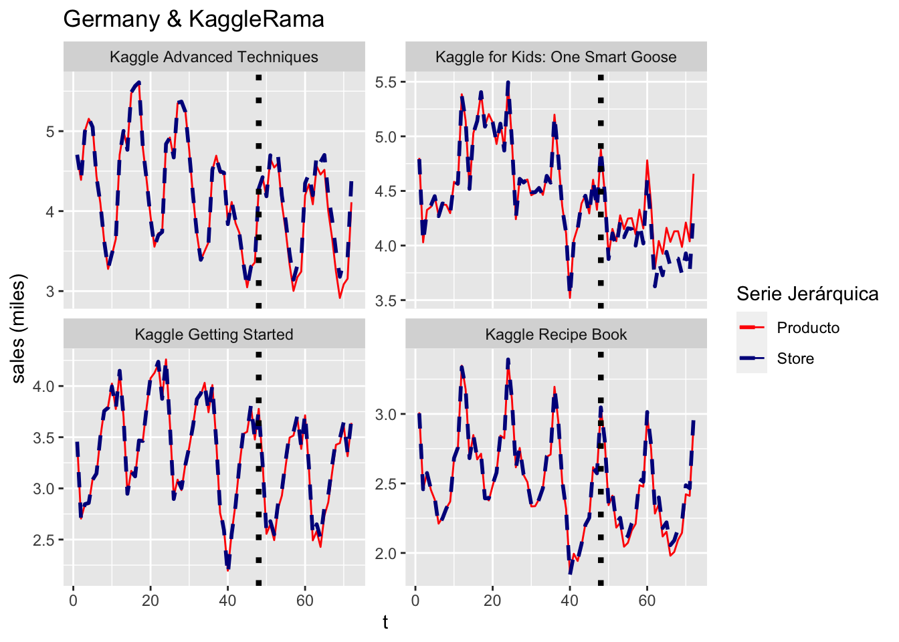